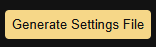
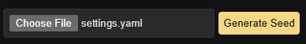

- Navigate to the seed generation page
- Expand the categories found there to adjust your desired settings.
- When you have adjusted the settings to your liking, click "Generate Settings File".

- This will prompt you to save your settings file. This file is what is used to generate seeds with those settings.
- At the bottom of the page, upload your settings file and click "Generate Seed"

- This will prompt you to download your seed mod, which which will be installed as a standalone mod in OpenKH.
- You'll also see a seed link appear. You can view your spoiler log by clicking on the link.
- If you plan on playing with client/server, you can use this link to host a server on the Archipelago website to connect to in order to use remote items.